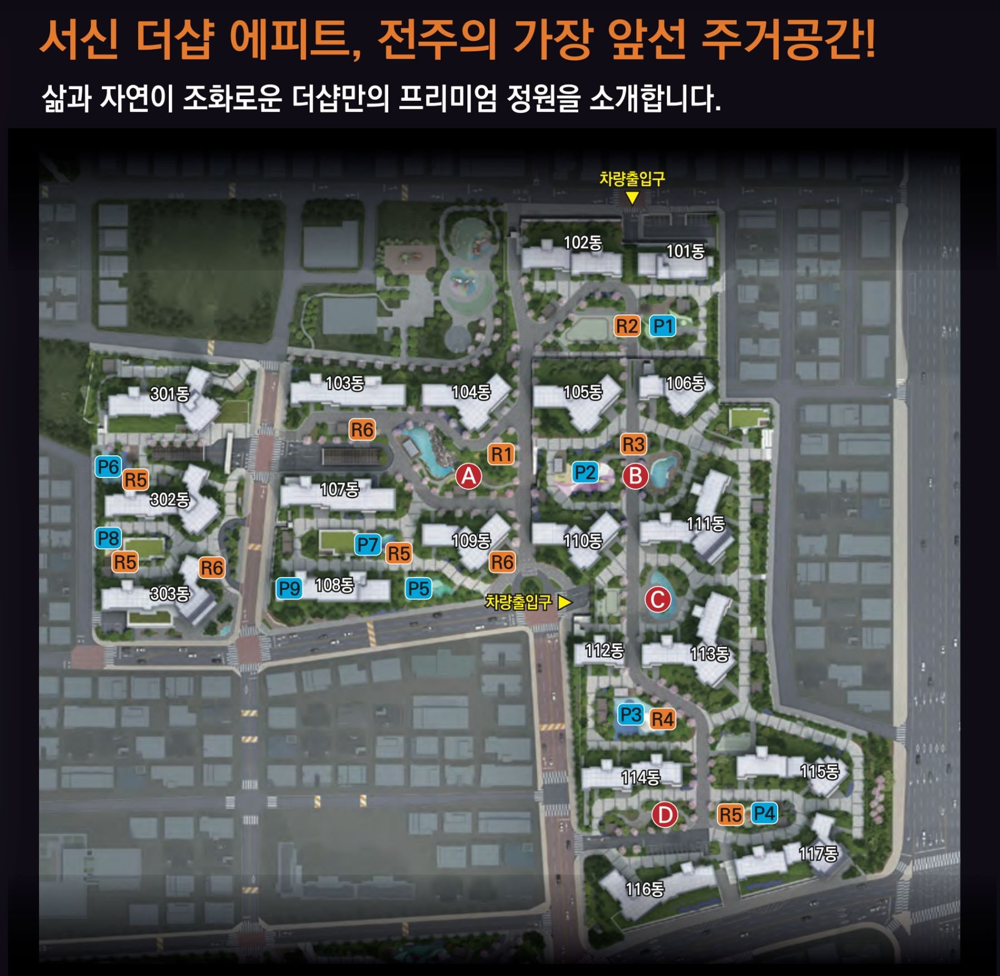

A
투어 가이드 영상
AI 음성 가이드
0:00 / 0:00
AI 조경 가이드


Landscape Guide
서신 더샵 에피트 3단지의 정원 네 구역과 그 안에 놓인 놀이·휴게 시설입니다. 구역을 고르면 투어 가이드 영상과 음성 안내가 함께 열립니다.
AI 음성 가이드
0:00 / 0:00
0개 시설
고른 조건에 맞는 시설이 없습니다. 구역이나 종류를 다시 골라 보세요.